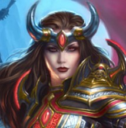

Explore os jogos que a Comunidade do Portal Games UP está curtindo!
“
The Legend of Zelda é uma série de jogos eletrônicos da Nintendo criada em 1986 por Shigeru Miyamoto e Takashi Tezuka. É centrado em jogos eletrônicos de ação e aventura e alguns elementos de RPG.
”
B4ddie50.9 horas jogadas no momento da análise150 pessoas acharam esta análise útil
“
Luigi's Mansion 3 é um jogo eletrônico de ação-aventura desenvolvido pela Next Level Games e publicado pela Nintendo para o Nintendo Switch. É o terceiro título da série Luigi's...
”
L0veg00d15.8 horas jogadas no momento da análise300 pessoas acharam esta análise útil
“
Pokémon Sword e Pokémon Shield são jogos eletrônicos de RPG da série Pokémon, desenvolvidos pela Game Freak, publicados pela The Pokémon Company, e distribuídos pela Nintendo...
”

H4DES36 horas jogadas no momento da análise156 pessoas acharam esta análise útil